その他営業品目
others
吹付けアスベスト除去システム
Sprayed Asbestos Abatement System
有害なアスベストは、ただ剥がせばいいというものではありません！
アスベスト除去処理工事において最も重要なことは、 作業中に発生するアスベスト粉じんを作業場外にださないこと。 作業者をアスベスト粉塵から守ること。 住居者にたいして安全な状態で建物を解放すること の3点です。
セキュリティーゾーン（洗身施設）設置
アスベスト処理作業場はポリエチレンシートで密封隔離し、負圧除じん装置により作業場を負圧として、発生するアスベスト粉じんを作業場外へ出さないようにしています。 作業者はアスベスト粉じんから身を守る防護衣（粉じん防護性の高いタイベック製）と防護マスク（フィルタ区分RL3）を装着し、セキュリティゾーンを経由して除去処理作業場に入ります。
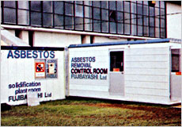
セキュリティーゾーン設置
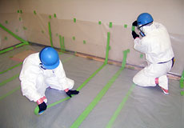
密封養生
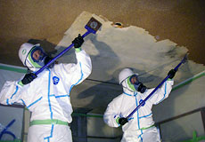
アスベスト除去中
アスベスト粉じんを外に出さない！
作業者が処理作業場より退場する際はセキュリティゾーンの直前においてあらかじめ、ヘルメット・マスク・防護衣等に付着したアスベスト繊維を取り払います。 そして前室にて防護衣等を脱ぎ捨てて、マスクをしたままシャワー室で全身を温水洗身又はエアー洗身します。 次に更衣室へ移動して防護マスクを顔面から外しますが、その際にマスクのフィルターは廃棄します。 そしてマスク本体は流水にて入念に洗浄し、アスベスト粉じん一切外に持ち出さないようにしています。 なお、除去したアスベスト材は乾かないうちにポリエチレン袋に1次梱包し、処理作業場より搬出する際に2枚目のポリエチレン袋に再度密封して、外部仮保管場所へ集積保管します
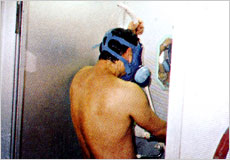
シャワー洗身風景
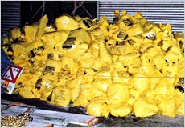
アスベスト廃棄物
作業区域を安全な状態で解放する
アスベスト除去完了後には、処理作業区域全体の再清掃を実施します。
除去処理表面と密封養生ポリエチレンなどの表面には、粉じん飛散防止剤を充分に吹付けして、目に見えない残存アスベスト繊維の飛散防止の処理をします。
その後、負圧除じん装置・エアーシャワー・掃除機など、装置内部の洗浄が出来ない機器の開口部は、全て完全密封をして、スクレーパー・ブラシ等や工具もアスベストをはらい、厚手のポリエチレン袋に密封し場外搬出します。
また、洗身シャワー廃水や工具等洗浄廃水は、吸水性樹脂などで処理し、廃アスベスト材ど同じように袋づめし、最終処分をします。
作業場の隔離解除方法は、粉じん飛散防止処理後の作業場内にてエアーモニタリングを実施し、「財団法人日本建築センター石綿処理技術」でのアスベスト繊維数値のと同じ、およそ10f/L以下であることを確認のうえ、ポリエチレン密封養生シートを撤去し解放しています。
このほか、藤林商会では封じ込め処理作業も行なっています。
ですが、よほどの事情等で除去できない場合を除き、処理後に一番安心な除去処理することをおすすめします。
ダイオキシン汚染物除去
Dioxin Decontamination
廃棄物焼却施設などを解体作業する前には
ダイオキシン類の高圧洗浄除去処理が必要です
解体工事を実施する廃棄物焼却施設は、ダイオキシン類で高濃度に汚染されています。 ですから、最優先しなくてはいけないのは「作業者へのダイオキシン類ばく露防止」と、「環境へのダイオキシン類の拡散防止」です。 そのために、汚染物の毒性や特徴に対する十分な理解と、処理方法や作業に使用する機器類についての正しい知識を持つことが大切です。

洗浄・はつりマシーン

ノズル付近
廃棄物焼却炉施設内作業における
ダイオキシン類ばく露防止対策要綱の概要
1. 作業区域の設定と隔離
焼却炉の火床面積が0.5m²以上、または、焼却能力が50kg/H以上の焼却炉を設置してある施設で、小型焼却炉から大型焼却施設までのほとんどが対象となっています。

サンプリング調査

電気集じん装置内部調査
2. 廃棄物焼却炉当の解体、改修に関わる計画届け
焼却炉の火床面積が2m2以上、または、焼却能力が200kg/H以上の焼却炉を設置された焼却炉等を解体、改修する場合は、工事開始の日の14日前までに、労働基準監督署に対して計画届を提出しなければなりません。

堆積灰等の除去

セキュリティーゾーンシャワー風景
3. その他の主な対策概要
- 汚染物のサンプリング調査
- 作業指導者の選任
- 空気中のダイオキシン類の濃度の測定
- 汚染物の除去
- 調査・測定結果に基づく解体方法の決定
- 発散減の湿潤化
- 使用する保護具の選定
- 廃棄、排水及び解体廃棄物の処理方法の適正化
- 特別教育の実施

付着物洗浄（火格子部）

付着物洗浄
超高圧ウォータージェット
Ultra-High-Pressure Water Jetting
廃棄物焼却施設解体等作業前には
ダイオキシン類の高圧洗浄除去処理が必要です。
最大圧力3,000kgf/cm²の超高圧力水で、創造を絶するパワーを発揮！
水をマッハ2というスピードで飛ばすことで、最高圧力300MPaという想像を絶する超高圧水を発生させる事が可能な超高圧ポンプです。
高圧洗浄、塗装膜はくり、劣化コンクリートはつり工事、コンクリート建造物等のカッティング工事など、多彩な作業の中核を担います。
ウォータージェットによる工事の利点は何と言っても安全な点。
環境にも影響を与えません。
また、水だけで施行するため、母材に傷をつける事なく洗浄・はくり・はつり等の工事が可能です。
従来の工事では困難であった曲面や、複雑に入り組んだ形状の洗浄、塗装膜はくりも容易にこなします。
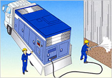
ウォータージェットのトラック
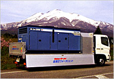
ウォータージェットのトラック
超高圧ウォータージェットによる高圧洗浄作業
従来は解体しなければ洗浄が難しかった複雑な機械装置や広範なスタジアムの清掃を簡単に、且つ短時間に洗浄ができる理想的なシステムです。
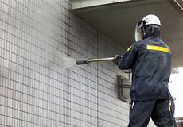
高圧洗浄作業
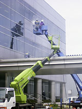
高圧洗浄作業
[工事例]
- 熱交換器チューブ内の硬質スケール
- 構造物の素地調整
- 大型スタジアム清掃
- 上下水道の配管洗浄
- トンネルばい煙洗浄
- 温泉ガリ洗浄
- 各種船舶の洗浄
超高圧ウォータージェットによる高圧洗浄作業
老朽化したトンネル等でコンクリートの崩落事故などが多数報告される昨今に望まれる高度先進技術。従来のインパクト工法のように周囲に悪影響を与えません。 自然環境と作業者をダイオキシン被害から解放します。 超高圧ウォータージェットによるダイオキシン類等無人洗浄・はつりシステム
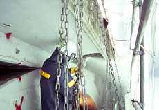
はつり工事風景
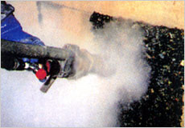
はつり工事風景
[工事例]
- コンクリート橋脚の耐震補強
- コンクリート表面の目荒し（チッピング）
- ビル外壁リフォーム
- 塩害脆化コンクリート
- 道路床版補修面
- 石材表面の目荒し（チッピング）
超高圧ウォータージェットによる塗装幕の「はくり工事」
従来はブラストやサンダーを使用して行っていた作業を飛躍的に効率よく行うことが可能となりました。母材を傷つけないため再塗装時の下地処理も楽です。
[工事例]
- 石油タンクの底板、溶接部の塗膜
- 橋梁の錆、塗膜
- ビル外壁リフォーム
- 下水・終末処理場のライニング
- 客車の塗膜
- 発電所の水圧鉄管内面ライニング
ウォータージェットポンプの圧力と用途
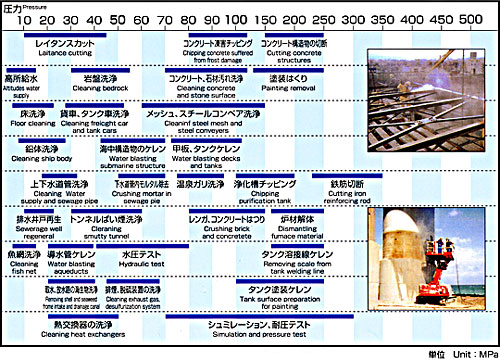
上水／下水施設の防食防水システム
Ultra-High-Pressure Water Corrosionting
スワエール上水・下水（防食防水）システムとは？
上水／下水用コンクリート構造物等の防食、防水、を施す画期的瞬間硬化コーティングシステムです。 「イソシアネート」と「特殊硬化材」の2成分からなる「ポリウレア樹脂」（製品名：スワエール）と、その2成分を混合吐出するスプレー技術をベースとして開発されました。
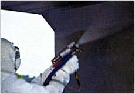
はつり工事風景
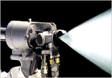
はつり工事風景
技術の特徴
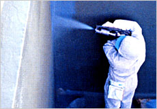
防食防水システム
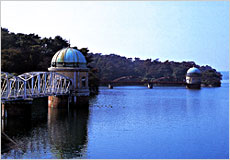
防食防水システム